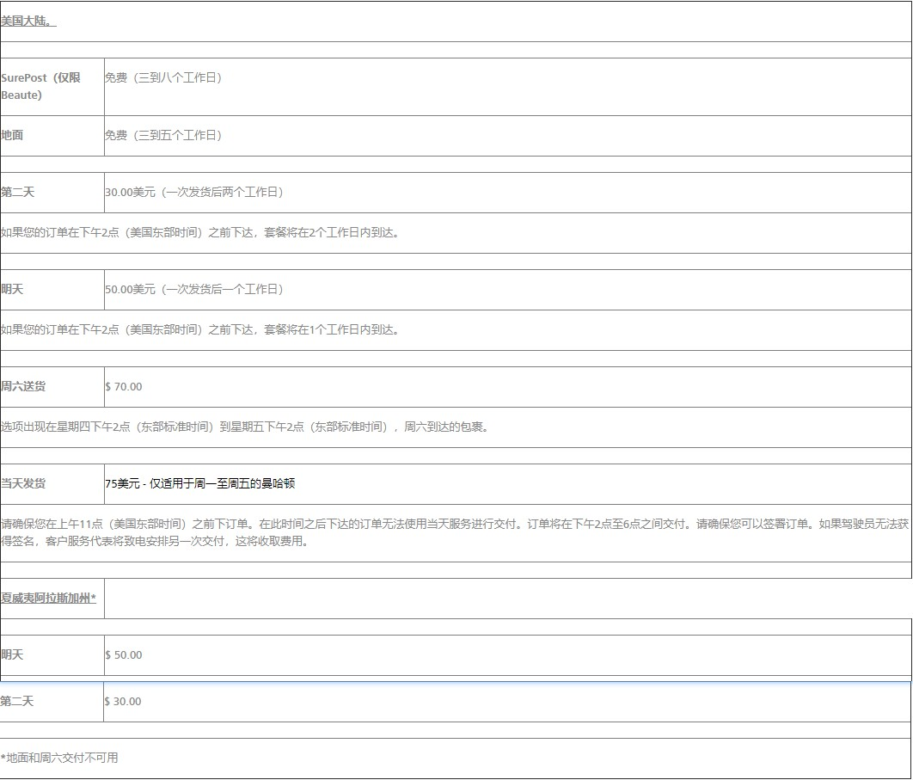
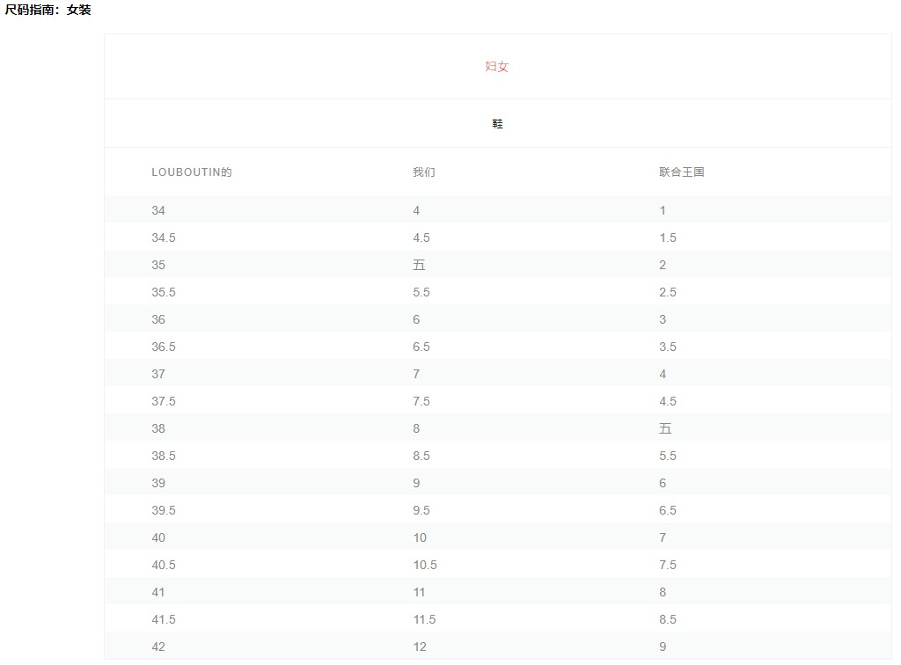
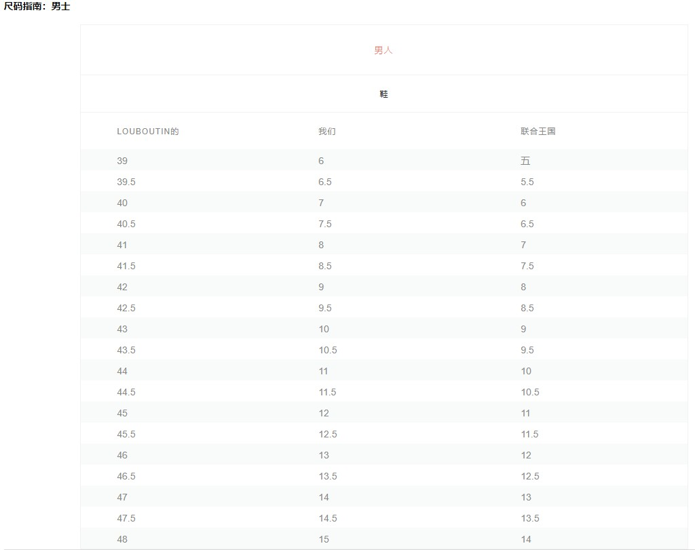

1.联系我们
如有任何疑问，请致电1.888.8LOUBIS（1-888-856-8247）或发送电子邮件至customerservice.usa@us.christianlouboutin.com
与我们联系。请注意，我们的服务时间为周一至周五上午
9点至下午6点（美国东部时间），节假日除外，周六上午10点至下午6点（美国东部时间），节假日除外
2. CHRISTIAN LOUBOUTIN返回政策
以下在线购买和退货信息管理通过Christian Louboutin美国网站进行的购买。有关加拿大订单，运输和退货信息，请在主页上选择加拿大作为您的国家/地区。
请注意，此时在线购买的商品不能在任何Christian Louboutin零售精品店退回或兑换。
请注意，产品页面上认为最终销售的任何商品均不予退还。
2.1。退货政策
对于在线购物，Christian
Louboutin将在原始发票的同时接受原始状态的商品退款/换货。退回的商品还必须包括原装鞋盒，防尘袋，鞋跟水龙头和粘性鞋底标签，并且必须在交货之日起
14天内退回给我们（即您的退货必须在收到订单后14天内邮寄给我们）。运费不予退还。
我们强烈建议所有客户在卸下透明粘性鞋底标签之前和处理任何原始包装之前，在交货时彻底检查商品。如果您的订单有任何差异，请立即与我们联系。
所有的鞋子都必须在干净的地毯表面上进行试穿和尺寸，直到您确定要保养它们为止。我们的红色鞋底非常精致，我们无法接受看似磨损或损坏的鞋子的退货。红色鞋底必须处于完美状态。
鞋底出现损坏的返回鞋可能会导致翻新费用，如果无法翻新出售，可能会被拒绝。我们感谢您的理解。
2.2。退货说明
每批货物都包含退货商品说明：
- 1.登录您的帐户，或在网站的“退货”部分搜索您的购买，或点击此处。
- 2.选择要返回的项目，然后按照提示完成RMA请求。
- 3.确认后，您可以通过电子邮件发送或打印预付UPS退货标签以便装运。这必须在14天的时间内启动。
- 4.包括原始收据。如有需要，您也可以打印订单确认电子邮件。
- 5.确保粘贴透明粘性鞋底标签，并包括原装鞋盒，防尘袋和鞋跟水龙头。
- 6.不要使用Christian Louboutin鞋盒作为包装箱。请放在合适的包装箱内，并贴上我们的预付退货标签。
- 7.记录您的跟踪号码。
- 8.在人员配备的UPS商店取下您的包裹并收集您的记录收据（您最近的位置请访问www.ups.com）。请勿使用投递箱位置来确保安全。
- 9.Christian Louboutin保留拒绝任何不符合上述要求的商品退货或换货的权利。如果您的包裹不被接受，它将被退回给您并且不会退款。
- 10.如果退回包丢失，被盗或处理不当，Christian Louboutin将不承担报销或赔偿的责任。请保留所有跟踪详细信息以供记录。
2.3。退款和处理时间
我们将尽一切努力确保及时退款或换货，并在您的退货处理完毕后发送电子邮件通知。收到您的退货后，将进行检查。如果商品的条件是可接受的，那么将在收到后的10个工作日内向原始付款方式发放
信用证。请注意，根据您的金融机构，可能需要额外的2-10个工作日才能将信用额发布到您的帐户。
3.交换
对于在线购物，ChristianLouboutin将在原始收据的同时接受其原始状态的商品进行兑换。退回的商品必须包括原装鞋盒，防尘袋和脚跟水龙头，并且必须在交货之日起14天内退回给我们（即您的退货
必须在收到订单后14天内邮寄）。请按照上述所有程序和要求将商品退回我们的工厂。我们可以根据要求促进订单的一次性直接交换。直接交换只能用于相同样式的不同大小，或者对于具有完全相同值的另一个项目。交换
取决于处理时所需物品的可用性，我们将尽最大努力确保您的要求得到满足。如果要求的商品无法满足您的兑换，我们将退还原始付款方式。我们为您交换的商品提供免费地面运输
服务。请致电1.888.8LOUBIS（1-888-856-8247）或发送电子邮件至customerservice.usa@us.christianlouboutin.com
联系在线代表以确认您的交换请求。。请
注意，我们无法促进PayPal交易的直接交换。或者，您可以提交新订单作为交换，您的原始购买将退还原始付款方式。如果没有在线提供合适的尺寸，款式或颜色，请联系我们获取进一步的帮助。
4. CHRISTIAN LOUBOUTIN BEAUTE
4.1。运输
所有Christian Louboutin Beaute订单总额不超过100.00美元将通过UPS
SurePost发货，除非在结账时选择加急运输选项。SurePost在交付时不需要签名，并通过USPS提供。根据我们的标准政策，
任何超过100美元的订单将通过UPS地面运送，并需要签名。一旦订单处理完毕，所有购买都将通过电子邮件发送跟踪信息。
4.2。退货政策
对于在线购物，Christian
Louboutin仅在附有原始销售单的情况下才接受Beauté商品退款。ChristianLouboutinBeauté产品无法兑换。产品必须完全未使用，并且只有在原始状态下才能接受退货。
退回的产品也必须采用原始包装，并且必须在原始的交付箱中运回。购买必须在交货之日起14天内退回给我们（即您的退货必须在收到订单后的14天内邮寄）。
运费不予退还。
我们强烈建议所有客户在交货时彻底检查商品。如果您在收到订单时与订单有任何差异，请保留所有文件和包装，并立即与我们联系。
4.3。退货说明
每件货物都包含退回ChristianLouboutinBeauté商品的说明：
- 1.登录您的帐户，或在网站的“退货”部分搜索您的购买，或点击此处。
- 2.选择要返回的项目，然后按照提示完成RMA请求。
- 3.确认后，您可以通过电子邮件发送或打印预付UPS退货标签以便装运。这必须在14天的时间内启动。
- 4.包括原始收据。
- 5.以原始包装包装商品。
- 6.仅使用原始配送箱进行装运。以不同包装退回的商品将不被接受退货。
- 7.粘贴我们的退货标签。
- 8.记录您的跟踪号码。
- 9.在人员配备的UPS商店取下包裹并收取记录收据（最近的位置请访问www.ups.com
打开新窗口。 ）请勿使用投递箱位置以确保安全。
- 10.Christian
Louboutin保留拒绝任何不符合上述要求的商品退货的权利。如果您的包裹不被接受，它将被退回给您并且不能退款。
5.订单处理和交付
出于安全原因，Christian
Louboutin在线购物将需要在交付时签名。所有购买都通过UPS发货。此外，购买可能不会发送到邮政信箱或APO
/ FPO地址，这些地址不能通过UPS获得。我们不会自行决定向货运代理商，
酒店所在地或任何机构发货，这可能会对包裹的安全构成风险。Christian
Louboutin不能对意料之外的延误负责。
在下午2:00（美国东部时间）之前的工作日下达的所有订单通常将在当天开始处理。下午2:00（美国东部时间）后下达的订单通常会在下一个工作日开始处理。周末或假日的订单通常会在下一个工作日开始处理。
所有订单都需要经过审核，Christian
Louboutin保留要求提供额外身份信息并将订单发送到账单地址的权利。提供的结算信息必须能够经过验证，并且必须与您的银行存档的内容相匹配。请确保持卡人可以确认
订单详情。当您在我们的网站上下订单时，我们只会在验证您的信用卡详细信息，获得信用授权，确认库存情况以及您的订单已准备好发货后才会从您的信用卡中收取费用。我们不会在您提交订单时从您的信用卡
中收取费用，但会获得0.00美元或1.00美元的授权以进行验证。订单处理时间在订单提交后立即开始，
6.运输方法和费用

7.跟踪
为确保您的交付安全，我们不提供跟踪号码。但是，我们会在您的货件确认电子邮件中提供一个链接，以便您跟踪包裹的进度。购买完成后，系统会自动通过电子邮件确认电子邮件确认。
请注意，套餐只能由Christian
Louboutin在线代表截取。出于安全原因，我们无法将您的包重新路由到新地址。如果您无法签收包裹，我们可以代表您安排在您当地的UPS工厂打电话。
签订包裹后，Christian
Louboutin不承担任何责任。持卡人不需要签收包裹，而是要求您在18岁以上的所有送货地址签收。一旦您收到订单，如果您不完全满意或者订单与您的订单不
符，请保留所有文件和包装，并立即致电1.888.8LOUBIS（1-888-856-8247）或发送电子邮件至customerservice.usa@us.christianlouboutin.com与我们联系。
8.采购
根据可用性，可以通过Christian
Louboutin.com直接在线下订单，也可以联系我们的在线个人购物者。网站本部分的在线购买可能由美国居民进行，以便交付给美国的客户
，包括阿拉斯加和夏威夷。我们目前无法向其他地方提供在线购物，但邀请我们的客户参考我们的商店定位器。
9.产品可用性
虽然我们尽一切努力保持我们网站上列出的物品库存充足，但偶尔我们会出售某些款式。如果我们对您订购的商品缺货，我们将通过电子邮件通知您。任何更改都将反映在您
的订单总额和运费确认中。我们保留限制我们供应的产品数量的权利;
仅提供订单的一部分或分割订单。
9.1。预购
请注意，产品到货日期是估计值，由于生产和发货时间的不同而无法保证。如果您因任何原因延迟或无法完成订单履行，我们将通知您。请注意，只有在您的订单发送给您后，
您的信用卡才会全额收费;
但是，在此之前，您的信用卡可能会获得0.00美元或1.00美元的授权。订单在周一至周五处理和交付，节假日除外（除非周六交货是您选择的送货方式）。
10.账户
10.1。创建一个帐户
您可以点击此处
登录
注册在线帐户，或者我们的在线精品客户服务代表可以在您下订单时为您创建帐户。
10.2。管理您的帐户
当您登录帐户时，您将能够执行以下操作：
- 1.购买时可以更快地结账
- 2.检查订单状态
- 3.查看过去的订单
- 4.更改您的帐户信息
- 5.更改您的密码
- 6.存储替代地址（运送给家人和朋友！）
- 7.订阅我们的时事通讯，了解最新活动和新收藏
10.3。被遗忘的密码
如果您忘记了密码，我们可以通过与您在注册时提交的电子邮件的安全连接向您发送新密码。单击此处
登录打开新窗口。接收新密码。成功登录帐户后，您可以更改密码。
11.变更/取消
请注意，如果您想取消或修改订单，请尽快发送电子邮件至customerservice.usa@us.christianlouboutin.com。我们将尽一切努力满足您的要求。但是，一旦订单已提交并已开始处理，我们无法保证可以取消或修改购买。
12.定价
Christian
Louboutin网站上显示的价格以美元报价。虽然我们会尽力确保网站上的所有价格都准确无误，但可能会出现错误。如果我们发现您订购的商品价格有误，我们会给您选择以正确的价格重新确认您的订单或取消订单。如果我们无法在48小时内与您联系，我们会将订单视为已取消。您同意，如果我们已收到产品的全额付款，则您在本网站上订购的产品丢失或损坏的风险会在交付产品时转移给您。
13.付款
Christian
Louboutin接受以下在线购物付款方式：
- 1.签证
- 2.万事达
- 3.美国运通
- 4.发现
- 5.贝宝
14.销售税
法律要求我们对运往我们公司零售业务所在州的订单收取适用的销售税。Christian
Louboutin已注册在所有征收此类税收的州征收销售税和使用税。一些州还评估运费和手续费
的销售税。您的销售税将自动计算并在结账时添加到您的订单中。实际销售税将在您下订单时计算，并且可能与估计的税额不同。
14.1。科罗拉多州客户的重要销售税信息
Christian
Louboutin没有义务，也没有收取科罗拉多州的销售税。您的购买须缴纳科罗拉多销售税，除非特别免税。购买不仅仅是因为它是通过互联网或其他远程方式进行的。
科罗拉多州要求纳税人在年底提交销售/使用税申报表，报告所有未征税的购买并对这些购买征税。不收取科罗拉多销售税的零售商有义务向购买者提供年终采购摘要，以协助购买者
提交纳税报告。有关如何提交此回报的详细信息，请访问科罗拉多州税务局网站www.taxcolorado.com。法律要求不收取科罗拉多州销售税的零售商向科罗拉多州税务局提供一份报告，
说明年底所有购买的总金额超过科罗拉多州税务局设定的特定门槛。
15.关心
15.1。我们的红色鞋底......
请注意，我们鞋子的红色鞋底会磨损。不要担心，因为这不是鞋子的缺陷，预计会因使用而发生。
我们强烈建议咨询皮革护理专业人员或鞋匠，以获取具体的建议和维护。
所有皮革的一般护理：
- 1.使用干燥的软布保持皮革表面清洁干燥。
- 2.始终将鞋子存放在远离光线和热源的地方。
- 3.保护皮革制品免受雨水和湿气的侵害
- 4.不使用时，请将鞋子存放在提供的Christian
Louboutin防尘袋中。
- 5.避免接触研磨表面。
16.尺寸信息
尺寸信息将在每个项目的描述中注明。我们已提供此参考资料以帮助您找到最合适的产品，但如果您有其他问题，请致电1-888-856-8247或发送电子邮件至customerservice.usa@us.christianlouboutin.com与我们经验丰富的客户服务部门联系。
16.1。尺码指南：女装

16.2。尺码指南：男士

17.维修
如果您需要维修或翻新在线购买的物品，我们很乐意为您推荐以下维修专家。
Leather
Spa
55
West
55th
St，
纽约，纽约，10019
电话：212.262.4823
传真：212.262.4780
电子邮件：info@leatherspa.com
Santana
Creative
Ltd
2900
Rowland
Rd
Raleigh，NC，27616
电话：919.521.8485
传真：919.278.7674
电子邮件：customerservice@santanacreative.com
Pasquale
Shoe
Restoration
5616
San
Vincente
Blvd，
Los
Angeles，CA，90019
电话：323.936.6883
电子邮件：contact@pasqualeshoerepair.com
Nicks
Custom
Boots＆Shoe
Repair
167
Dupont
Street，
Toronto，ON
M5R
1V5
电话：416.924.5930
电子邮件：info@nickscustomboots.com
请注意Christian
Louboutin仅出于对那些希望修理我们产品的人的礼貌而提出这些建议。使用这些地点的消费者全权负责评估地点的适用性，操作以及由此进行的任何维修的结果。
Christian
Louboutin不承担任何责任或相关责任，也不对这些维修专家或其提供的任何产品或服务作出任何陈述或保证，也不对其进行认可或批准。
18.真实的基督徒LOUBOUTIN保证
Christian
Louboutin通过www.Christianlouboutin.com，其商店和精选零售商销售其优质产品。我们不能保证从其他来源购买的商品不会被伪造，篡改，二手或其他可疑来源。所有其他
名称为CHRISTIAN
LOUBOUTIN的网站都是非法的，可能会销售假冒产品。我们邀请您查看我们网站“我们的精品店”部分的全球库存清单，以核实我们的官方零售商名单。要了解有关我们的防
伪计划的更多信息，请访问http://stopfake.christianlouboutin.com/
19.
GIFT-WRAP
所有Christian
Louboutin.com订单都附带我们的标准鞋盒和红色纸巾。我们也很乐意提供免费礼品包装。请在结账时选择此选项和您想要的包装纸样式。
20.错误和不准确
我们的目标是在我们的网站上提供完整，准确和最新的信息。遗憾的是，无法确保任何网站完全没有人为或技术错误。本网站可能包含印刷错误，不准确或遗漏，其中一些可能与定价和可用性
以及产品信息有关。我们保留纠正任何错误，不准确或遗漏的权利，包括在提交订单后以及随时更改或更新信息，恕不另行通知。